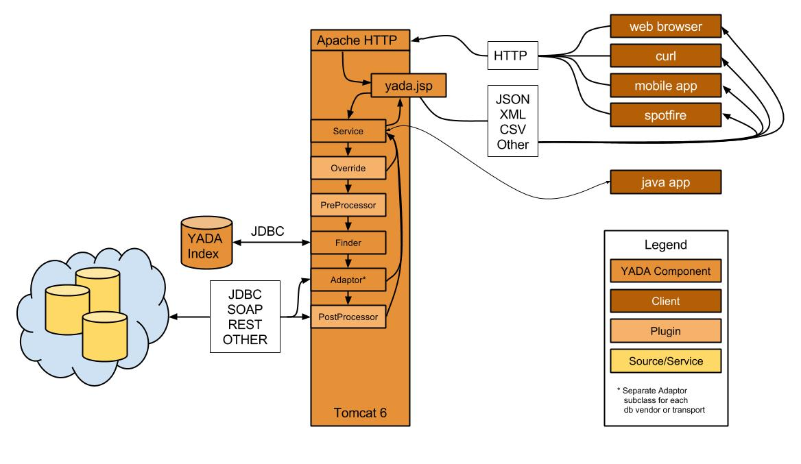
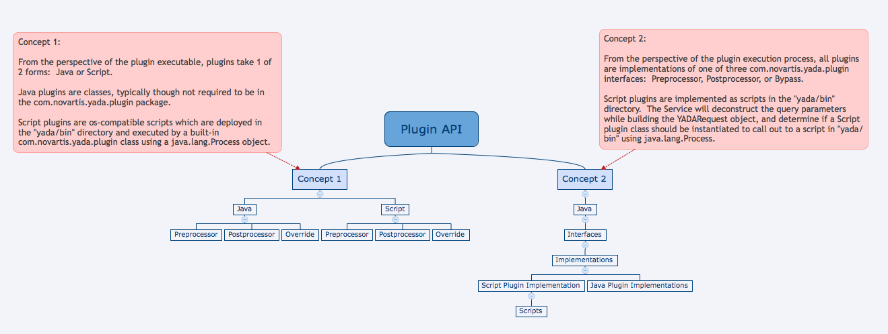

Access any data, at any source, in any format, from any environment, using just a URL, with just one-time configuration.
Get data from multiple sources, in different formats, merge the results into one with uniform column names, on-the-fly, using one URL.
Its raisons d'être are to enable efficient, non-redundant development of data-dependent applications and utilities, data source querying, data analysis, processing pipelines, extract, transform, and load (ETL) processes, etc. YADA does all this while preserving total decoupling between data access and other aspects of application architecture such as user interface.

For the most recent updates to documentation, see https://github.com/Novartis/YADA.
Skip to the Quickstart/Deployment Guide

YADA is like a Universal Remote Control for data.
For example, what if you could access
You can with YADA.
Or, what if you could get data
You can with YADA.
YADA exists to simplify data access and eliminate work.
YADA is a lightweight framework for data retrieval, searching, storage, and manipulation.
YADA is an instant web service for your data.
YADA is a tool to enable efficient development of interfaces and data-processing pipelines.
YADA is as an implementation of Thin Server Architecture.
YADA is anti-middleware.
YADA is an acronym for “Yet Another Data Abstraction.”
YADA is an open source software framework distributed by Novartis Institutes for BioMedical Research under the Apache 2.0 license.
Its raisons d’être are to enable efficient, non-redundent development of data-dependent applications and utilities, data source querying, data analysis, processing pipelines, extract, transform, and load (ETL) processes, etc. YADA does all this while preserving total decoupling between data access and other aspects of application architecture such as user interface.
YADA is a software framework, which means it is a collection of software tools forming a basic structure underlying a system, for developers and data analysts to use to create new tools and solutions in a new way.
The novelty and utility of YADA lies in its centralization of management of data source access configuration. It simplifies these aspects of software development by eliminating many steps, thereby enabling rapid development, standardization of access methods, and the code in which these methods are implemented. Further it strongly encourages reuse of existing configurations (once configured.)
As a result of these configuration facilities, YADA enables the aggregation or integration of data from multiple data sources using a standard method, agnostic with regard to any vendor or technology-specific details of disparate data source implementations.
For example, the conventional method to access, or furthermore, combine data from say, an Oracle® database, and a web service, is to write code which connects to each database or service independently using different methods and libraries, write code to execute embedded queries independently, also using different methods and libraries, and write code to parse and aggregate the separately acquired data sets. Then the data is typically fed to an analysis tool.
With YADA, the data source connections and application-specific queries are stored securely and centrally, the queries are executed using identical methods (despite the different sources,) and the data can be integrated or aggregated on-the-fly.
For software developers and data analysts alike, these features offer potentially tremendous time savings, faster time-to-delivery, and a larger percentage of time focused not on the tedium of configuration, but on the specific context of a software solution or data analysis.
This document contains an overview of the framework and features. Check out the Quickstart/Deployment Guide for details on getting started.
YADA exists to simplify data access and eliminate work.
YADA may be exactly what you’ve been looking for, or it may be a solution to a problem you didn’t know you had. YADA is the perfect tool for many use-cases. Here are a few examples. Suppose you are a
The new numbers are in from the lab, or from last night’s feed, and uploaded to your database or data warehouse. You want to create a new visualization in your favorite statistical analysis package, but you’re not sure how to connect to the database. Your data gal helped you set it up in Python once, but since then, you just run the script to get the data. Now you need it in a different environment.
If your data gal had set up a YADA query for your datasource, you could simply run the query in your web browser to download the data, or use any module that will retrieve data from a url. You can reuse the very same query that was already configured for your other tasks.
Your constituents want their data, and they call you. Everyone wants basically the same set of columns but with a different “WHERE” clause, i.e., they each want a different subset of rows. Some can handle connection strings, but most can’t.
So you configure your datasource in the YADA server, store a query, and send the same url to every one, explaining to them where to plug in the values in the query parameter string so they get only the data they want. They might see some columns they don’t want but they can easily ignore them. If someone complains, heck, you just store another similar query with a different name, and voilà.
You hate middleware. Every time you want to extend the data model, you have to change your Resource layer, your DAO layer, your DAOImpls, your DTOs, your Model classes, your UI code, etc. You might have to touch 20 files to add one field.
Not so with YADA.
With YADA, you change your stored query, and you change the code that executes the stored query, whether it’s a javascript-based ajax call, or a perl LWP request, or a curl call from a shell script. As long as your client speaks HTTP, YADA will deliver your data.
Even you, middleware guy, can benefit from YADA.
Maybe you have to provide a RESTful interface to an existing application, and need to deliver in such a short window, or have only a handful of users, so a fully-specified REST service is not practical. Maybe you need to access an existing REST interface and can’t use your own proxy script; or, you have to grant access to a unix filesystem without mapping it in Apache or changing privileges. Perhaps the business wants to integrate some existing perl-based pipeline processes into a user interface or your Javascript UI team is already using YADA, and needs a Java® plugin to post-process data it’s retrieving from a third party.
A quick overview of the architecture
…and a little bit more specific:
Note the image indicates Tomcat 6. It should be Tomcat 7

YADA grew organically from a reverse-engineering effort.
Over the course of a few years, a scientist had developed an array of Perl CGI applications with thousands of lines of embedded SQL and Javascript.
Then he abruptly left the company.
He was not a trained, nor experienced software developer, he made little use of third party libraries, and violated a lot of conventions.
To gain an understanding of his code in order to maintain, extend, or replace it, SQL queries were extracted from the code, stored in a database, and given unique names.
A “finder” function was written in Perl to retrieve the SQL by name.
This “finder” was extended to support the passing of parameters.
Soon thereafter, this perl utility was ported to Java®. The burgeoning framework was extended further to support multiple data types, INSERT, UPDATE, and DELETE statements in addition to SELECT statements, JDBC transactions, SOAP queries, plugins, I/O, and so on.
Most YADA “Apps” are single-page Javascript applications running in web browsers. YADA is also heavily utilized by data analysts and bioinformaticians who need parameterized, delimited data subsets imported into their analysis tools such as R and Spotfire, or to be used by Perl or Python-based data processing pipelines.
YADA ships with scripts for using, as the YADA Index:
Soon the index will be stored in ElasticSearch®, but ultimately, it is vendor-agnostic. Other supported data sources currently include
MongoDB®, SQL Server®, and other datasource compatibility will be added soon.
For detailed information about plugin use and development, see the Plugin Use and Development Guide.
The plugin API is versatile. Plugins can be written in java, or in any scripting language supported on the YADA server. Plugins can be applied at the request level, affecting the entire request, or it’s output, or at the query level, affecting just a single query in a request. The conceptual, or implementation hierarchy of the plugin API (not to be confused with the actual package hierarchy) is reflected in the diagram below, from two different perspectives.

These are intended to manipulate URL parameters, either by removing, appending, or modifying them.
These are intended to modify results returned by queries. For example, an XSL Post-Processor might accept XML-formatted results and transform them before returning the to the client. Uploaded file processors, i.e., batch handlers, are post-processors.
These circumvent conventional YADA query processing. Effectively, anything is possible in a Bypass. Bypass plugins are popular ETL tools and bulk data loaders.
Copyright © 2016 Novartis Institutes for Biomedical Research
Licensed under the Apache License, Version 2.0 (the “License”); you may not use this file except in compliance with the License. You may obtain a copy of the License at http://www.apache.org/licenses/LICENSE-2.0
Unless required by applicable law or agreed to in writing, software distributed under the License is distributed on an “AS IS” BASIS, WITHOUT WARRANTIES OR CONDITIONS OF ANY KIND, either express or implied. See the License for the specific language governing permissions and limitations under the License.